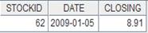
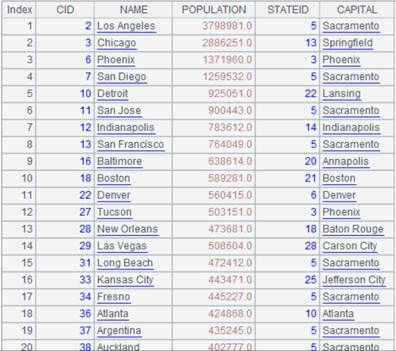
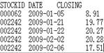
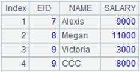
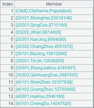

Description:
A foreign-key-style join between table sequences/record sequences, or a table sequence and a record sequence.
Syntax:
A.join(C:.,T:K,x:F,…; …;…)
Note:
The function matches C field of table sequence/record sequence A with the key of table sequence/record sequence T to find the desired records. Add an F field represented by x, which is T’s field expression, to A to generate a new table sequence.
K can be omitted or represented by #. When omitted, K is T’s key by default; when written as #, K is the ordinal number of a record of table T, which means foreign key numberization. Simply put, primary key values of the dimension table are natural numbers starting from 1, which are row numbers corresponding to table records. In this case, we can directly locate dimension table records according to key values by row numbers. This helps speed up association with the dimension table and increase performance.
If there is an F field in A, just modify the existing field of A. Use the latest time calculated through now() when time key value is not specified.
Option:
|
@i |
Delete a record with a non-matching foreign key value; by default, a non-matching record will be represented by null. If parameters x:F are omitted, perform the filtering purely over parameter A |
|
@o(F;) |
Use the record as the value of F field to generate a new record; here expression x is equivalent to ~ |
|
@d |
If parameters x:F are absent, delete records matching the foreign key and perform the filtering operation only over table sequence/record sequence A |
|
@k |
When parameter x is ~, record the relationship between parameter F and parameter C to identify the potentially associative foreign key |
|
@m |
Enable a merge join when A is ordered by C and T is ordered by K |
Parameter:
|
A |
Table sequence/record sequence |
|
C |
A’s foreign key; separate multiple fields in a composite key with the colon |
|
T |
Table sequence/record sequence |
|
K |
T’s key |
|
x |
T’s field expression, which can be represented by ~ and #; the pound sign # represents the ordinal number of a record in T; record the ordinal number as null if a record doesn’t exist in T |
|
F |
Field name in expression x |
Return value:
A table sequence/record sequence
Example:
|
|
A |
|
|
1 |
=connect("demo").query("SELECT * FROM CITIES") |
Data of CITIES table:
|
|
2 |
=connect("demo").query("SELECT * FROM STATECAPITAL where STATEID<30").keys(STATEID) |
Data of STATECAPITAL table:  |
|
3 |
=A1.join(STATEID,A2,CAPITAL) |
Associate CITIES table and STATECAPITAL table through the foreign key, during which default parameter K is STATEID, the key of STATECAPTITAL, and add STATECAPITAL’s CAPITAL field to CITIES to generate a new table sequence
|
|
4 |
=A1.join(STATEID,A2:#,CAPITAL) |
As STATEID field values are natural numbers starting from 1, which correspond to ordinal numbers of records in STATECPATITAL table, parameter K is written as # to use those ordinal numbers in order to increae efficiency; return same result as A3 |
|
5 |
=A1.join@i(STATEID,A2,CAPITAL) |
@i option enables deleting records with non-matching foreign key values; write them as nulls if there isn’t the option  |
|
6 |
=A1.join@i(STATEID,A2) |
@i option enables filtering CITIES table only when parameters x:F are absent
|
|
7 |
=A1.join@d(STATEID,A2) |
With @d option and when parameters x:F are absent, delete records where foreign key values are matching and perform filtering only on CITIES table
|
|
8 |
=A1.join(STATEID,A2,abc) |
Write records where values of parameter x cannot be found in A2 as nulls
|
|
9 |
=A1.join@k(STATEID,A2,~:STATES) |
With @k option and when parameter x is ~, write correspondence relationship between STATES and STATEID in the result table sequence to identify foreign key for pre-association  |
|
10 |
=A1.join@o(cities;STATEID,A2,CAPITAL) |
@o option enables to take the whole orignal record as a cities value to generate a new record; this is equivalent to an expression where parameter x is ~ 
|
|
11 |
=A1.join(STATEID,A2,CAPITAL:NAME) |
Modify the existing fields when NAME field already exists in CITIES table
|


Perform the JOIN through MERGE method:
|
|
A |
|
|
1 |
=connect("demo").query("SELECT * FROM CITIES").sort(STATEID) |
Below is data of CITIES table:  |
|
2 |
=connect("demo").query("SELECT * FROM STATECAPITAL where STATEID<30").keys(STATEID).sort(STATEID) |
Below is data of STATECAPITAL table:
|
|
3 |
=A1.join@m(STATEID,A2,CAPITAL) |
As CITIES table is ordered by STATEID and STATECAPITAL table is ordered by parameter K and with @m option being present, we can use MERGE method to compute
|